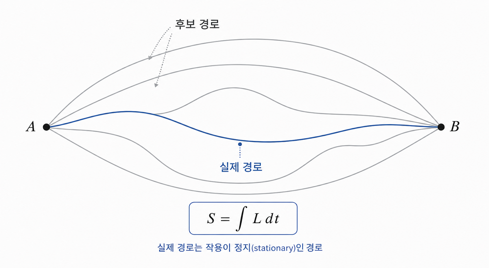
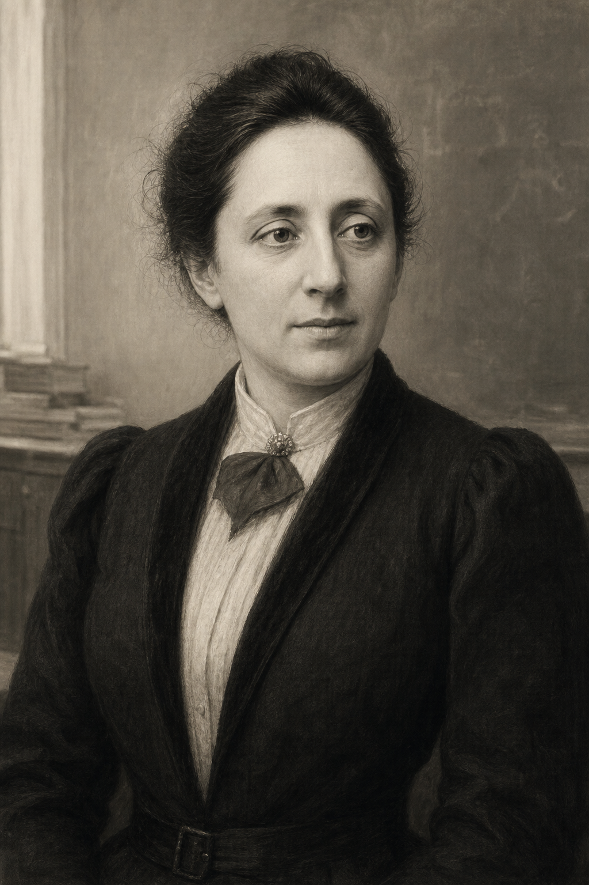

제1장: 아름다움의 대가 — 에미 뇌터와 보존의 기하학
1. 물리 법칙, 발견되는 것인가 선언되는 것인가?
우리는 뉴턴의 $F=ma$에서부터 출발해 수많은 보존 법칙을 배워 왔습니다. 운동량 보존, 에너지 보존, 각운동량 보존. 보통은 이것들이 실험을 통해 하나씩 발견된 경험 법칙처럼 보입니다. 하지만 20세기 초, 에미 뇌터(Emmy Noether)는 질문의 방향을 바꾸었습니다. "보존 법칙은 대체 어디에서 오는가?"
그녀의 답은 급진적이었습니다. 보존 법칙은 우연히 따로따로 주어진 것이 아니라, 자연 법칙이 어떤 변환 아래에서도 같은 형태를 유지한다는 사실, 즉 대칭성에서 나온다는 것입니다. 이 통찰 덕분에 보존 법칙은 더 이상 실험 결과의 목록이 아니라, 물리 법칙의 구조가 스스로 요구하는 필연으로 보이기 시작했습니다.
이 장의 목표는 뇌터 정리를 유명한 격언으로만 소개하는 데 있지 않습니다. 독자가 "대칭이 있으면 보존량이 나온다"라는 문장을 실제 계산의 흐름 속에서 한 번 따라가 보게 하는 데 있습니다. 그러려면 먼저 물리학이 왜 운동을 힘 대신 작용(action)으로 기술하는지를 살펴봐야 합니다.
2. 작용(Action) — 우주가 선택한 경로
뇌터의 정리를 이해하려면 먼저 작용이라는 무대를 이해해야 합니다. 계의 운동은 라그랑지언 $L(q,\dot q,t)$로부터 정의되는 작용
을 통해 기술됩니다. 자연은 흔히 말하는 "최소"라기보다, 이 작용이 정류(stationary)가 되도록 운동합니다.
여기서 "정류"라는 표현은 중요합니다. 우리는 흔히 최소 작용 원리라고 부르지만, 실제로는 언제나 최소값만 찾는 것이 아닙니다. 어떤 경로는 진짜 최소일 수도 있고, 어떤 경우에는 최대나 안장점 같은 형태일 수도 있습니다. 핵심은 자연이 임의의 작은 경로 변화에 대해 1차 변화가 사라지는 경로를 따른다는 점입니다. 산길을 비유로 들면, 가장 낮은 골짜기만 찾는 것이 아니라 주변으로 조금 비틀어도 높이가 1차적으로는 달라지지 않는 길을 찾는 셈입니다.
변분법을 적용하면 작용의 변화는
처럼 정리됩니다. 실제 운동 경로에서는 오일러-라그랑주 방정식
이 만족되므로 적분항은 사라집니다. 경계점에서 출발점과 도착점을 고정하면 $\delta q(t_1)=\delta q(t_2)=0$이므로 경계항도 사라지고, 결국 자연의 운동은 위 방정식을 만족해야 합니다.
이 지점에서 라그랑주 역학의 장점이 드러납니다. 뉴턴 역학은 힘을 하나하나 써 넣는 언어라면, 라그랑주 역학은 무엇이 변하지 않는가를 더 잘 드러내는 언어입니다. 좌표계를 바꾸거나 문제를 일반화할 때도 작용의 형태는 더 안정적으로 살아남습니다. 그래서 대칭성과 보존 법칙의 관계를 다루기에는 뉴턴의 힘보다 라그랑주의 작용이 훨씬 좋은 출발점이 됩니다.

2.5 최소가 아니라 정류라는 말의 의미
이 차이는 단순한 용어 싸움이 아닙니다. "최소"라고만 생각하면 독자는 자연이 언제나 가장 짧은 길, 가장 작은 에너지, 가장 낮은 값을 즉시 고른다고 오해하기 쉽습니다. 하지만 물리계는 조건에 따라 훨씬 더 미묘하게 움직입니다. 빛의 경로를 다루는 페르마의 원리도, 고전역학의 작용 원리도, 본질은 허용된 모든 경로 중 실제 경로에서 1차 변화가 사라진다는 데 있습니다.
이 관점은 뒤에서 양자역학으로 넘어갈 때도 중요합니다. 양자역학에서는 하나의 경로만 실재한다고 말하기보다, 가능한 경로들이 위상을 가지고 서로 간섭한다고 말합니다. 그때 고전 경로가 특별해 보이는 이유도 결국 작용의 변화가 급격히 상쇄되지 않는 경로이기 때문입니다. 즉, 고전역학의 정류 작용 원리는 이후 물리학의 더 깊은 층에서도 단순한 계산 요령이 아니라 구조적 출발점으로 남습니다.
3. 손으로 따라가는 첫 예시 — 자유입자는 왜 곧게 가는가?
가장 단순한 예로 자유입자를 생각해 봅시다. 힘이 작용하지 않는 질량 $m$의 입자에 대해 라그랑지언은
처럼 쓸 수 있습니다. 위치 $x$ 자체는 라그랑지언에 들어가지 않고 속도만 들어가므로,
입니다. 이를 오일러-라그랑주 방정식에 넣으면
즉
을 얻습니다. 가속도가 0이라는 뜻이니, 자유입자는 등속직선운동을 합니다. 뉴턴 역학에서는 "힘이 없으니 가속도가 없다"라고 말했던 사실이, 여기서는 "작용이 정류가 되려면 경로가 직선이어야 한다"는 언어로 다시 나타납니다.
이 예시가 중요한 이유는 계산이 단순해서가 아닙니다. 라그랑지언이 위치 $x$에 직접 의존하지 않는다는 사실이 곧 공간의 평행이동 대칭을 뜻하고, 그 결과가 운동량 보존으로 연결되기 때문입니다. 즉, 방정식을 푸는 과정과 대칭을 읽어내는 과정이 같은 식 안에서 만납니다.
3.2 한 번 더: 단진자는 무엇을 보존하고 무엇을 잃는가?
이번에는 아주 익숙한 단진자를 보겠습니다. 길이 $\ell$인 진자가 중력장 안에서 각도 $\theta$만큼 흔들린다고 하면, 라그랑지언은 대략
처럼 쓸 수 있습니다. 여기서는 자유입자와 달리 좌표 $\theta$가 라그랑지언 안에 직접 들어갑니다. 따라서
가 0이 아니고, 오일러-라그랑주 방정식은
즉
이 됩니다.
이 예시는 자유입자와 좋은 대비를 이룹니다. 진자는 중력장의 특정 방향, 즉 아래쪽을 특별한 방향으로 느낍니다. 그래서 공간 전체의 회전 대칭은 이미 깨져 있습니다. 진자를 통째로 다른 방향으로 돌려 놓으면 같은 운동이 나오지 않습니다. 하지만 시간이 흐른다고 해서 중력 법칙이 하루아침에 바뀌지는 않으므로, 시간의 평행이동 대칭은 여전히 살아 있습니다. 그 결과 진자에는 운동량 보존이 아니라 에너지 보존이 더 자연스럽게 남습니다.
실제로 단진자의 에너지는
로 쓸 수 있고, 마찰이 없다면 이 값은 일정하게 유지됩니다. 가장 아래점에서는 퍼텐셜 에너지가 가장 작고 속도가 가장 크며, 양끝점에서는 속도가 0이 되고 퍼텐셜 에너지가 가장 큽니다. 에너지는 형태를 바꾸며 오가지만 전체 합은 보존됩니다. 이런 식으로 하나의 계가 어떤 대칭은 잃고 어떤 대칭은 유지하는지를 보면, 왜 어떤 보존량은 남고 어떤 것은 남지 않는지 훨씬 선명해집니다.
3.5 시간의 균질성과 에너지 보존
뇌터의 정리를 가장 익숙하게 체감할 수 있는 예는 시간의 평행이동 대칭입니다. 라그랑지언이 시간을 노골적으로 포함하지 않는다고 해 봅시다. 즉,
입니다. 그러면 다음 조합을 생각할 수 있습니다.
이 양이 왜 보존되는지 한 단계만 더 써 보겠습니다.
여기서 첫째 항과 넷째 항은 상쇄되고, 오일러-라그랑주 방정식
을 쓰면 둘째 항과 셋째 항도 상쇄됩니다. 결국
가 남습니다. 따라서 $\partial L/\partial t=0$이면
이고, $E$는 보존됩니다. 다입자계에서는
형태로 일반화되며, 이것이 익숙한 에너지 함수와 연결됩니다.
여기서 독자가 꼭 붙잡아야 할 직관은 이렇습니다. 에너지는 "어딘가에 저장된 정체불명의 물질"이 아니라, 오늘과 내일의 법칙이 다르지 않다는 사실이 수학적으로 응결된 양입니다. 시간의 균질성이 깨지지 않는 한, 에너지는 흘러가도 사라지지 않습니다.
3.8 작용이 안 바뀌면 왜 보존량이 생기는가?
이제 독자가 한 번쯤 품을 법한 질문을 정면으로 써 보겠습니다. 좌표를 아주 조금 바꾸었을 때 작용이 변하지 않는다는 사실이, 왜 시간에 따라 일정한 어떤 양의 존재를 뜻할까요?
핵심은 변환을 가했을 때 작용의 변화가 두 방식으로 읽힌다는 데 있습니다. 한편으로는 변분법에 따라 작용의 변화가 오일러-라그랑주 항과 경계항으로 분해됩니다. 다른 한편으로는, 지금 우리가 가한 변화가 계의 실제 대칭이라면 작용 전체는 1차에서 변하지 않아야 합니다. 실제 운동 경로에서는 오일러-라그랑주 항이 이미 0이므로, 결국 남는 정보는 경계항뿐입니다. 따라서 대칭 변환 아래에서 그 경계항도 서로 같아야 하고, 바로 그 조건이 어떤 조합이 시간에 따라 바뀌지 않는다는 결론으로 번역됩니다.
조금 덜 압축해서 쓰면 이렇습니다. 가장 단순한 좌표 변환 $q \to q + \epsilon \eta$를 가했을 때 실제 운동에서는
만 남습니다. 그런데 이 변화가 대칭이라면 $\delta S = 0$이어야 하므로, 시작점과 끝점에서
의 값이 같아야 합니다. 이 논리는 임의의 두 시각 $t_1$, $t_2$에 대해 성립하므로, 그 조합은 운동 내내 일정해야 합니다. 보존량은 바로 여기서 나옵니다. 요컨대 뇌터 정리는 기적 같은 추가 규칙이 아니라, 작용의 불변성과 변분법의 경계항이 만나는 자리에서 나오는 정리입니다.
4. 왜 대칭인가? — 공간과 회전이 남기는 흔적
뇌터의 정리는 "연속 대칭 하나마다 보존량 하나"라는 문장으로 요약됩니다. 이 말이 실제로 무엇을 뜻하는지 가장 익숙한 예들로 다시 보겠습니다.
- 공간의 평행이동 대칭 $\rightarrow$ 운동량 보존
우주가 어느 위치에서나 같은 법칙을 따른다면, 좌표를 조금 옮겨도 라그랑지언의 형태는 바뀌지 않습니다. 이 대칭에 대응하는 뇌터 전하, 즉 해당 대칭에서 나오는 보존량이 바로 운동량입니다. "모든 장소가 동등하다"는 사실이 운동량 보존으로 번역되는 셈입니다.
- 시간의 평행이동 대칭 $\rightarrow$ 에너지 보존
라그랑지언이 시간을 노골적으로 포함하지 않으면, 즉 오늘과 내일의 법칙이 같다면 에너지가 보존됩니다. 조금 전의 계산은 그 문장이 단지 철학적 비유가 아니라 실제 미분식이라는 점을 보여 줍니다.
- 회전 대칭 $\rightarrow$ 각운동량 보존
공간의 특정 방향이 특별하지 않다면, 즉 계를 조금 회전시켜도 물리 법칙이 같다면 각운동량이 보존됩니다. 이것이 왜 행성 운동에서, 왜 원자 스펙트럼에서, 왜 양자역학의 각운동량 대수에서 반복해서 등장하는지의 뿌리입니다.
회전 대칭의 감각은 중심력 문제에서 특히 선명합니다. 태양 주위를 도는 행성을 생각하면, 퍼텐셜 에너지는 오직 중심과의 거리 $r$에만 의존합니다. 즉, 어느 방향에 행성이 놓였는지는 중요하지 않습니다. 이 말은 문제에 선호되는 방향이 없다는 뜻이고, 바로 그 무방향성이 각운동량 보존으로 이어집니다. 케플러의 면적속도 일정 법칙도 결국은 이 더 깊은 대칭성의 그림자입니다.
더 구체적으로 말하면, 회전 대칭인 계에서는
가 일정하게 유지됩니다. 그래서 행성은 태양에 더 가까워질 때 더 빠르게 움직이고, 멀어질 때 더 느려집니다. 이것은 별도의 경험 법칙이 하나 더 있는 것이 아니라, 회전에 대해 법칙이 무심하다는 사실이 동역학으로 번역된 결과입니다.
여기서 한 걸음만 더 나아가면, 각운동량은 단지 편리한 벡터가 아니라 회전을 만들어 내는 생성자(generator)라는 사실이 보입니다. 공간을 조금 회전시킨다는 것은 좌표를 어떤 방향으로 미세하게 섞는다는 뜻이고, 그 미세한 변환에 대응하는 뇌터 전하가 바로 각운동량입니다. 그래서 고전역학에서는 각운동량이 회전 운동의 중심량으로 나타나고, 양자역학에서는 각운동량 연산자가 실제로 상태를 회전시키는 연산자로 등장합니다.
이 점은 다음 장으로 가는 다리이기도 합니다. 군론의 언어로 말하면, 연속 대칭은 단순히 "예쁜 모양의 성질"이 아니라 무한소 변환, 즉 아주 작은 연속 변환의 방향들로 이루어진 구조를 가집니다. 그리고 보존량은 바로 그 방향들에 붙어 있는 물리적 양입니다. 회전에 붙은 보존량이 각운동량이라면, 이후 장들에서 만나게 될 내부 대칭들에도 저마다 대응하는 생성자와 전하가 따라붙습니다.
여기서 중요한 것은 보존량이 단지 계산의 편의가 아니라는 점입니다. 보존량은 자연이 대칭이라는 문법으로 말하고 있다는 흔적입니다. 나중에 대칭이 자발적으로 깨지는 이론으로 들어가면, 바로 이 문법이 어떻게 더 풍부한 현상을 낳는지도 보게 됩니다.
이 대응을 한눈에 보면 다음과 같습니다.
| 대칭 | 변환 예 | 보존량 | 대표 물리 예시 |
|---|---|---|---|
| 공간 평행이동 | x -> x + a | 운동량 | 자유입자, 충돌 문제 |
| 시간 평행이동 | t -> t + a | 에너지 | 고립계, 마찰 없는 단진자 |
| 회전 대칭 | 방향을 조금 회전 | 각운동량 | 중심력 운동, 행성 궤도 |
4.5 뇌터 정리의 한 줄짜리 골격
이제 앞의 예시들을 하나의 문장으로 묶어 보겠습니다. 좌표가 아주 작은 연속 변환
를 받을 때 작용이 변하지 않는다고 하겠습니다. 그러면 그 변환에 대응하는 어떤 조합 $Q$가 시간에 따라 일정하게 유지됩니다.
엄밀한 일반형은 계의 종류에 따라 더 복잡해질 수 있습니다. 특히 시간 변환이나 라그랑지언이 전체미분만큼 변하는 경우에는 보정항이 들어갑니다. 다만 공간 좌표의 단순한 연속변환만 생각하면, 보존량의 모양은 대략
처럼 생긴다고 생각할 수 있습니다. 여기서 $\partial L/\partial \dot q$는 일반화 운동량이고, $\eta$는 "어느 방향으로 변환했는가"를 나타냅니다. 즉, 보존량은 뜬금없이 떨어지는 값이 아니라, 계가 허용하는 변환 방향과 운동량 구조를 곱해 만든 조합입니다.
이 표현을 앞의 예시에 대입하면 감각이 살아납니다. 공간 평행이동에서는 $\eta$가 위치를 조금 미는 방향이므로 운동량이 나오고, 회전에서는 $\eta$가 각도로 도는 방향이므로 각운동량이 나오며, 시간 평행이동에서는 조금 더 정교한 형태를 거쳐 에너지가 나옵니다. 서로 다른 보존 법칙들이 사실은 모두 같은 문법의 사투리라는 뜻입니다.
5. 에미 뇌터: 시대를 앞서간 거인

1915년 전후의 괴팅겐은 수학과 물리학의 화산 분화구 같은 곳이었습니다. 힐베르트와 클라인은 일반 상대성 이론이 던진 새로운 수학적 문제들, 특히 대칭성과 보존 법칙의 관계를 더 깊이 이해하고 싶어 했습니다. 이때 등장한 사람이 바로 뇌터였습니다.
그녀는 단순히 "보존 법칙이 있다"는 사실을 재확인한 것이 아니라, 어떤 종류의 대칭이 어떤 종류의 보존 정리와 연결되는가를 처음으로 일반적인 정리로 정식화했습니다. 오늘 우리가 입자물리학, 장론, 응집물질물리학에서 대칭을 거의 본능처럼 먼저 찾는 습관은 상당 부분 뇌터에게 빚지고 있습니다.
이때 흔히 말하는 "뇌터 정리"도 사실은 하나가 아니라 두 층을 가집니다. 보통 교과서에서 많이 만나는 것은 제1정리로, 시간 이동, 공간 이동, 회전처럼 유한한 개수의 연속 대칭에 대해 대응하는 보존량이 생긴다는 내용입니다. 우리가 지금까지 본 에너지, 운동량, 각운동량이 바로 여기에 속합니다. 반면 제2정리는 게이지 대칭처럼 함수 자유도를 가진 더 넓은 대칭에서, 운동방정식들 사이의 항등식이나 제약 구조가 생긴다는 사실을 다룹니다. 후자는 처음에는 덜 직관적으로 보이지만, 사실 현대 장론과 일반 상대성 이론을 이해하는 데 결정적으로 중요합니다.
특히 일반 상대성 이론의 초창기에는 에너지 보존을 어떻게 이해해야 하는지가 만만치 않은 문제였습니다. 시공간 자체가 휘어지고 좌표 선택의 자유가 커지면, 뉴턴 역학에서처럼 단순한 형태의 보존 법칙을 그대로 들고 오기 어렵기 때문입니다. 뇌터는 이런 혼란을 정리하면서, 대칭과 보존의 관계가 단지 특정 문제의 우연한 성질이 아니라 훨씬 더 일반적인 구조임을 보여 주었습니다. 이 점에서 그녀의 정리는 고전역학의 정리이자, 동시에 현대 장론으로 가는 입구이기도 했습니다.
당시 그녀는 여성이라는 이유로 제도권 학계에서 정당한 지위를 얻지 못했습니다. 한동안은 자신의 이름으로 강의조차 열기 어려웠고, 남성 동료의 명의 아래에서 수업을 해야 했습니다. 하지만 아이러니하게도, 바로 그 시대의 가장 근본적인 물리학은 그녀의 언어를 필요로 했습니다. 현실의 사회는 불평등했지만, 자연의 법칙은 그녀의 정리를 통해 한층 더 명료한 형태를 얻었습니다.
뇌터의 업적은 단지 "천재 수학자 한 사람의 아름다운 정리"로만 기억되기에는 너무 큽니다. 그녀는 물리학자들이 문제를 푸는 순서를 바꾸어 놓았습니다. 예전에는 현상을 보고 보존 법칙을 추려 냈다면, 뇌터 이후에는 먼저 대칭을 보고 어떤 보존량이 나와야 하는지를 묻게 되었습니다. 이 사고방식의 전환은 이후 장론과 입자물리학에서 결정적이었습니다.
6. 왜 이 정리가 20세기 물리학의 문을 열었는가
뇌터 정리의 진짜 위대함은, 고전역학의 한 구석을 예쁘게 정리했다는 데 있지 않습니다. 그것은 20세기 물리학 전체가 사용할 공통 문법을 제공했다는 데 있습니다. 상대성 이론에서는 시공간 대칭이 어떤 불변량을 남기는지 묻게 되었고, 양자역학에서는 상태가 군의 표현으로 어떻게 분류되는지 묻게 되었으며, 장론에서는 국소 대칭을 유지하기 위해 어떤 장이 필요해지는지 묻게 되었습니다.
다시 말해 뇌터 정리는 "보존 법칙의 이유"를 설명했을 뿐 아니라, 좋은 이론이 어떤 질문으로 시작되어야 하는가까지 가르쳐 주었습니다. 힘을 하나씩 나열하는 대신 대칭을 찾고, 허용되는 변환을 묻고, 그 결과 어떤 불변량과 어떤 상호작용이 따라오는지 살피는 태도입니다. 현대 물리학의 가장 생산적인 이론들은 거의 모두 이 순서를 따릅니다.
이 장에서 우리는 세 가지를 얻었습니다. 첫째, 작용이 정류가 된다는 말이 실제 운동 방정식을 낳는다는 사실. 둘째, 시간과 공간과 회전의 대칭이 각각 에너지, 운동량, 각운동량 보존과 연결된다는 사실. 셋째, 이 연결이 단순한 우연이 아니라 뇌터가 밝혀 낸 일반 구조라는 사실입니다.
다음 장에서는 이 구조를 조금 더 추상적인 언어로 밀어붙입니다. 이제 질문은 "무엇이 보존되는가?"에서 "대칭 자체는 어떤 문법으로 조직되는가?"로 옮겨 갑니다. 갈루아와 군론의 세계는 바로 그 문법의 골격을 보여 줍니다.